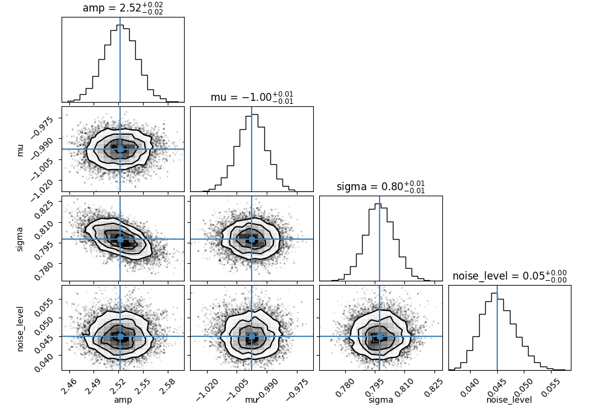
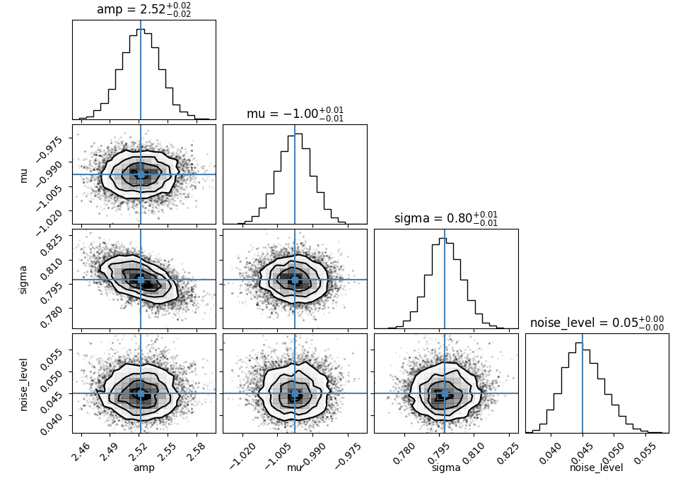

Tutorials
Contents
Tutorials¶
Example 1: Curve fitting with the numpy interface¶
# Standard imports
import numpy as np
np.random.seed(1)
import matplotlib.pyplot as plt
# Import optimize
import optimize as opt
# Gaussian function
def gauss(x, amp, mu, sigma):
return amp * np.exp(-0.5 * ((x - mu) / sigma)**2)
# Define a second objective for use with numpy to store parameters
def compute_obj(pars, x, data):
model = gauss(x, *pars)
residuals = data - model
rms = opt.RMSLoss.rmsloss(residuals)
return rms
# An x grid
dx = 0.01
x = np.arange(-10, 10 + dx, dx)
# True parameters
par_names = ["amp", "mu", "sigma"]
pars_true = [2.5, -1, 0.8]
# Noisy data
y_true = gauss(x, *pars_true)
y_true += 0.01 * np.random.randn(len(y_true))
# Guess parameters and model
pars_guess = [2, -0.4, 0.4]
model_guess = gauss(x, *pars_guess)
# Create the optimizer
optimizer = opt.IterativeNelderMead()
# Optimize the model
opt_result = optimizer.optimize(p0=pars_guess, obj=compute_obj, obj_args=(x, y_true))
# Get best fit pars
pbest = opt_result["pbest"]
# Build the best fit model
model_best = gauss(x, *pbest)
# Plot
plt.plot(x, y_true, marker='o', lw=0, label="my data", c='grey', alpha=0.8)
plt.plot(x, model_guess, label='Starting Model', c='blue')
plt.plot(x, model_best, label='Best Fit Model', c='red')
plt.xlabel('x')
plt.ylabel('y')
plt.legend()
plt.show()
The result …
Example 2: Curve fitting with the parameters interface¶
# Standard imports
import numpy as np
np.random.seed(1)
import matplotlib.pyplot as plt
# Import optimize
import optimize as opt
# Gaussian function
def gauss(x, pars):
return pars['amp'].value * np.exp(-0.5 * ((x - pars['mu'].value) / pars['sigma'].value)**2)
# Define an objective for use with the Parameters object
def compute_obj(pars, x, data):
model = gauss(x, pars)
residuals = data - model
rms = opt.RMSLoss.rmsloss(residuals)
return rms
# An x grid
dx = 0.01
x = np.arange(-10, 10 + dx, dx)
# True parameters
pars_true = opt.Parameters()
pars_true["amp"] = opt.Parameter(value=2.5)
pars_true["mu"] = opt.Parameter(value=-1)
pars_true["sigma"] = opt.Parameter(value=0.8)
# Noisy data
y_true = gauss(x, pars_true)
y_true += 0.01 * np.random.randn(len(y_true))
# Guess parameters and model
pars_guess = opt.Parameters()
pars_guess["amp"] = opt.Parameter(value=2.0)
pars_guess["mu"] = opt.Parameter(value=-0.4)
pars_guess["sigma"] = opt.Parameter(value=0.4)
model_guess = gauss(x, pars_guess)
# Create the optimizer
optimizer = opt.IterativeNelderMead()
# Optimize the model
opt_result = optimizer.optimize(p0=pars_guess, obj=compute_obj, obj_args=(x, y_true))
# Get best fit pars
pbest = opt_result["pbest"]
# Build the best fit model
model_best = gauss(x, pbest)
# Plot
plt.plot(x, y_true, marker='o', lw=0, label="my data", c='grey', alpha=0.8)
plt.plot(x, model_guess, label='Starting Model', c='blue')
plt.plot(x, model_best, label='Best Fit Model', c='red')
plt.xlabel('x')
plt.ylabel('y')
plt.legend()
plt.show()
Example 5: Curve fitting with uncorrelated unknown errors (Bayesian)¶
Here we again use the class based API.
# Standard imports
import numpy as np
np.random.seed(1)
import matplotlib.pyplot as plt
# Import optimize
import optimize as opt
# Corner
import corner
# Gaussian function
def gauss(x, pars):
return pars['amp'].value * np.exp(-0.5 * ((x - pars['mu'].value) / pars['sigma'].value)**2)
# An x grid
dx = 0.01
x = np.arange(-10, 10 + dx, dx)
# True parameters
pars_true = opt.BayesianParameters()
pars_true["amp"] = opt.BayesianParameter(value=2.5)
pars_true["mu"] = opt.BayesianParameter(value=-1)
pars_true["sigma"] = opt.BayesianParameter(value=0.8)
# Noisy data
y_true = gauss(x, pars_true)
y_errors = np.full(len(y_true), 0.05)
y_true += np.array([y_errors[i] * np.random.randn() for i in range(len(y_true))])
# Guess parameters and model
pars_guess = opt.BayesianParameters()
pars_guess["amp"] = opt.BayesianParameter(value=2.0)
pars_guess["mu"] = opt.BayesianParameter(value=-0.4)
pars_guess["sigma"] = opt.BayesianParameter(value=0.4)
pars_guess["sigma"].add_prior(opt.priors.Positive())
pars_guess["noise_level"] = opt.BayesianParameter(value=0.02)
pars_guess["noise_level"].add_prior(opt.priors.Positive())
model_guess = gauss(x, pars_guess)
# Create Bayesian objective.
# We consider likelihoods as special in that we can chain them together
# Note the order in the dict is irrelevant
likes = {"mylike": opt.GaussianLikelihood(noise_process=opt.WhiteNoiseProcess(), x=x, data=y_true, errors=y_errors)}
obj = opt.Posterior(likes=likes)
# Here each self is a modified instance of GaussianLikelihood (likes["mylike"])
def compute_residuals(self, pars):
return self.data - gauss(self.x, pars)
def compute_data_errors(self, pars):
return np.full(len(self.data), pars['noise_level'].value)
# There is magic going on under the hood to modify instances
likes["mylike"].compute_residuals = compute_residuals
likes["mylike"].compute_data_errors = compute_data_errors
# Create the Optimization Problem
optprob = opt.OptProblem(obj=obj, p0=pars_guess)
# Optimize the model
opt_result = optprob.optimize(optimizer=opt.IterativeNelderMead(maximize=True))
# # Get best fit pars
pbest = opt_result["pbest"]
# Build the best fit model
model_best = gauss(x, pbest)
# Plot
plt.errorbar(x, y_true, yerr=y_errors, marker='o', lw=0, elinewidth=1, label="my data", c='grey', alpha=0.8, zorder=0)
plt.plot(x, model_guess, label='Starting Model', c='blue')
plt.plot(x, model_best, label='Best Fit Model', c='red')
plt.xlabel('x')
plt.ylabel('y')
plt.legend()
plt.show()
# MCMC
mcmc_result = optprob.run_mcmc(opt.emceeSampler(), p0=pbest)
# Corner plot
pmed = mcmc_result['pmed']
fig = corner.corner(mcmc_result['chains'], truths=pmed.unpack(keys=['value'])['value'], labels=pmed.unpack(keys=['name'])['name'], show_titles=True)
fig.show()
 
